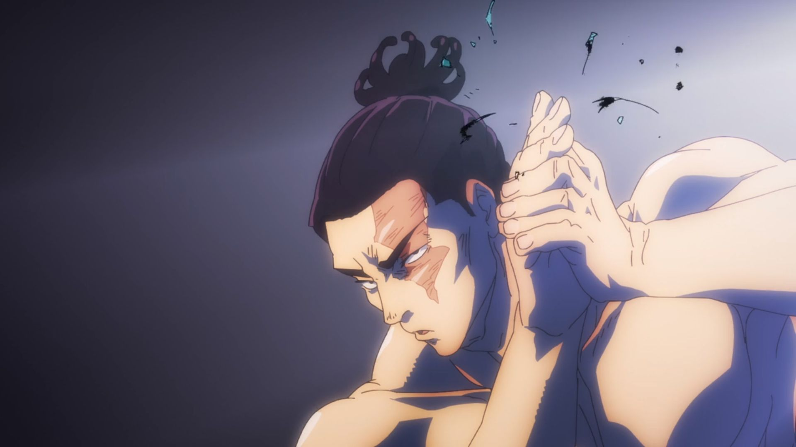
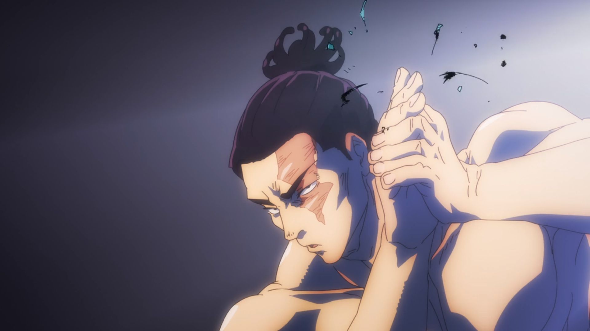

Ryomen Sukuna
Sukuna, também conhecida como rei das maldições, era um poderoso feiticeiro com duas faces e quatro braços, temido por todos no Japão antigo(Era de ouro). Ele dominava técnicas de maldição e espalhava caos e destruição
Nobara Kugisaki
Nobara cresceu em uma vila pobre, mas sempre teve um espírito forte. Ela se destacou na Escola Técnica de Feitiçaria de Tóquio com seu feitiço “Resonância de Pássaro”. Nobara Kugisaki é um exemplo de força e autenticidade, ensinando que podemos encontrar luz mesmo nas situações mais sombrias.
Toji Fushiguro
Toji nasceu no Clã Zenin, mas após se casar com a mãe de Megumi, adotou o sobrenome Fushiguro. Infelizmente, sua esposa faleceu, deixando-o sozinho com o filho. Sua personalidade fria e desapegada esconde um desejo de proporcionar uma vida melhor para Megumi, mesmo que tenha o abandonado.
Satoru Gojo
Gojo é o feiticeiro mais poderoso de sua geração, herdeiro das técnicas Limitless e Seis Olhos. Desde jovem, enfrentou muitos desafios e se tornou professor na Tokyo Jujutsu High, onde treina novos feiticeiros. Ele é uma figura carismática e protetora, lutando para manter o equilíbrio entre o bem e o mal no mundo das maldições.
Choso Kamo
Choso é um dos nove Pinturas da Morte, meio humano e meio espírito amaldiçoado, criado por Noritoshi Kamo. Ele possui a técnica de manipulação de sangue e é profundamente leal aos seus irmãos.
Kento Nanami
Nanami era um trabalhador comum que se tornou um feiticeiro jujutsu após um encontro com uma maldição. Ele deixou sua vida corporativa para combater maldições com uma abordagem prática e profissional. Nanami é um mentor importante para Yuji Itadori e um lutador habilidoso, sempre comprometido com a justiça
Aoi Todo
Todo é um estudante da Kyoto Jujutsu High School, conhecido por sua atitude excêntrica e amor por exibir seus músculos. Ele se tornou um feiticeiro habilidoso após ser treinado por uma feiticeira na infância.